The reference animation has five phases, not three. Here is the side-by-side between each Dream Land moment and the Artologist material that replaces it — plus the photo shots we need from the week-1 gallery shoot.
01
Find the gallery.
A wide cinematic establishing shot. The gallery is a small glowing point in the distance.
Scroll 0.00 → 0.20
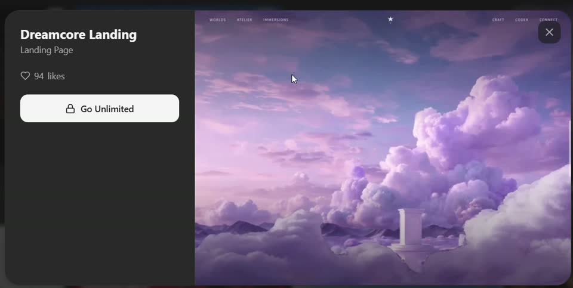
Reference · Dream Land
Lavender vista, floating pillar
A wide purple sky with a tiny Roman column hovering in the bottom right. The eye searches the frame for a focal point — and finds it small, far away.
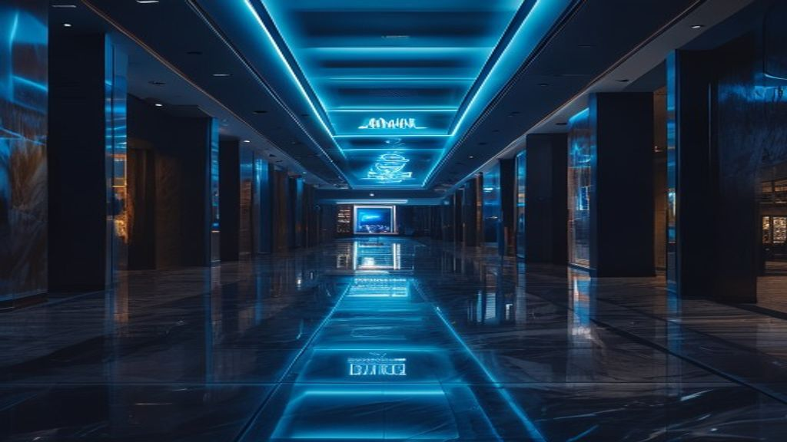
AI placeholder · v5 mockup
AI proxy — twilight mall corridor
Generated stand-in (Pollinations / Flux). Captures the perspective, the dark walls vignetting a glowing focal point at the end. The actual Shangri-La corridor replaces this in week 1.
Why this matters
Dream Land never shows you a logo on the first screen — it shows you a place. Ours has to do the same. The current mockup opens with a close-up of the storefront; we should open further back so the viewer "walks in" with the camera.
02
Arrive at the threshold.
The camera reaches an ornate aperture — the doorway.
Scroll 0.20 → 0.45
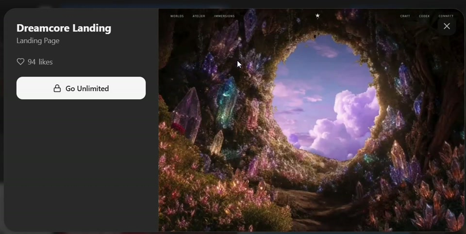
Reference · Dream Land
Crystalline portal
An ornate aperture grown from crystals, sky visible through. The frame does as much work as the opening.
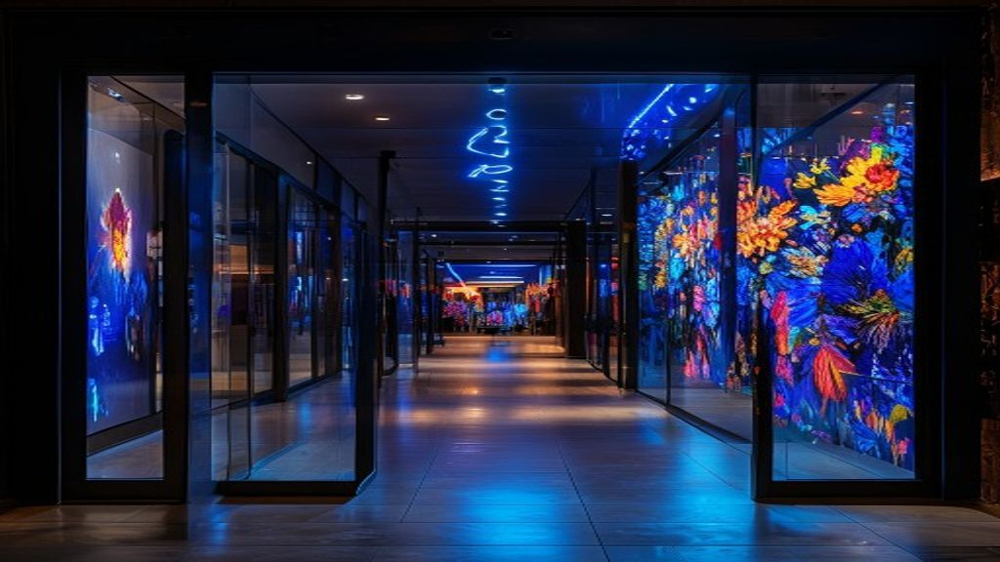
AI placeholder · v5 mockup
AI proxy — doorway portal
Generated stand-in. Captures the dark mall corridor framing the bright art interior, vivid paintings glowing through glass. The actual Shangri-La doorway replaces this in week 1.
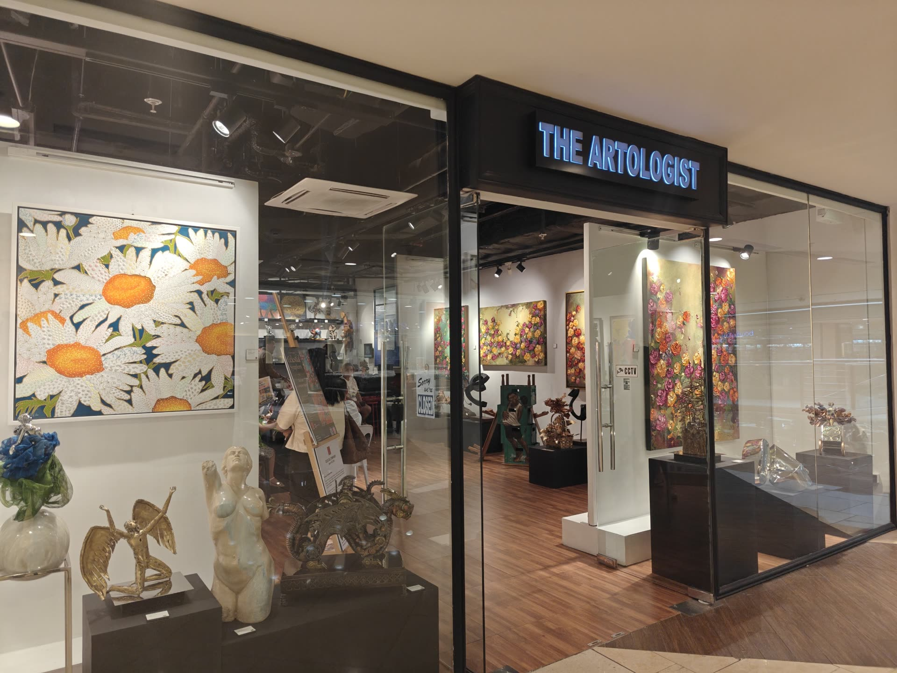
Real photo · current mockup
Real storefront with neon sign
The current v4 mockup uses this. Works, but the camera is too close — the doorway never reads as an aperture you pass through.
Shoot upgrade — Shot B
Stand 4–6 metres back from the gallery doors in the mall corridor. Wide angle. Compose so the gallery's glass storefront fills 60–70% of the frame, the dark mall walls vignette the rest. The neon sign should sit just above the centre line. This is the single most important new shot.
03
Cross the threshold.
Camera passes through — you're inside now.
Scroll 0.45 → 0.65
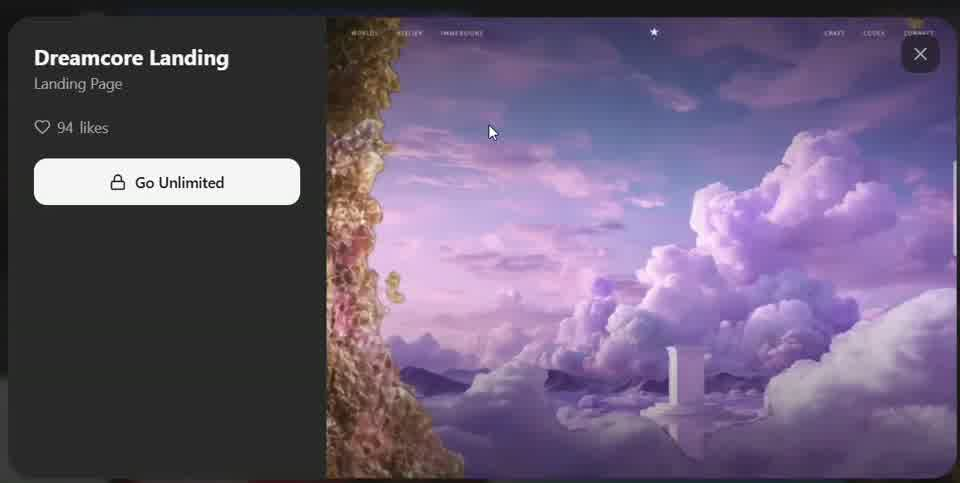
Reference · Dream Land
Threshold crossing
Camera has moved through. The crystalline wall is now a partial frame on the left edge only.
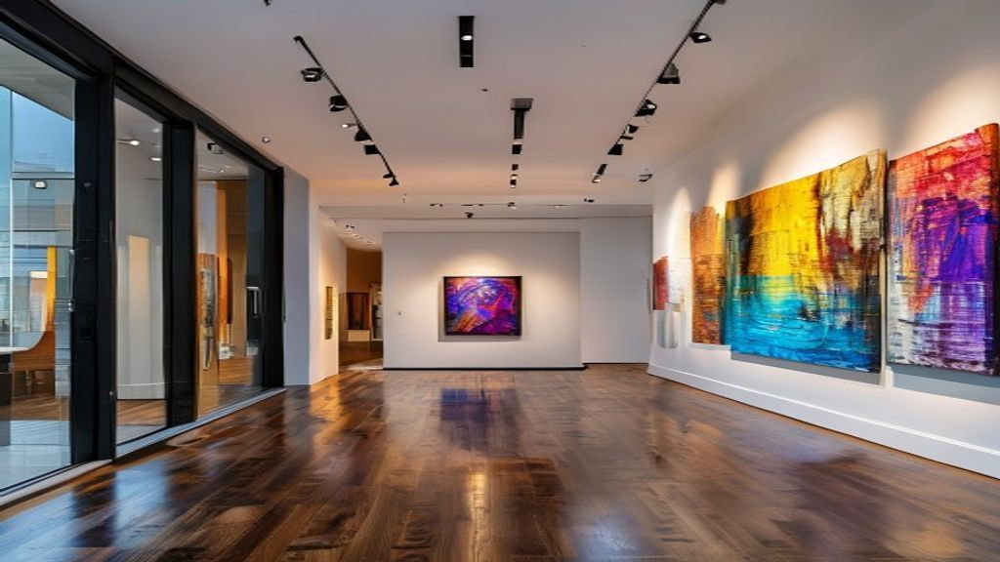
AI placeholder · v5 mockup
AI proxy — just past the threshold
Generated stand-in. Glass doorway sits as a partial frame on the left edge exactly as in Dream Land, paintings on the right wall, sculpture in middle distance. The actual interior shot replaces this in week 1.
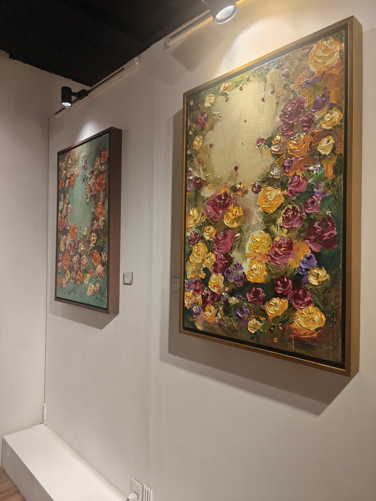
Real detail · could complement
Real spotlit painting
The impasto floral close-up. Doesn't capture the threshold crossing on its own but works as a cut-in during the transition.
Shoot upgrade — Shot C
Stand just inside the gallery threshold, wide-angle, looking in. Paintings line both walls; the central artwork or sculpture sits in middle distance. The threshold/glass frame should still be visible at the very left edge — that's what tells the viewer "you're inside now."
04
Look around the sanctum.
Settle. Atmosphere. The big title shows up here.
Scroll 0.65 → 0.85
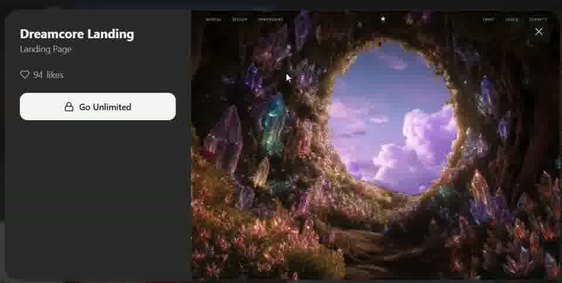
Reference · Dream Land
Inside the crystal sanctum
A new world. We've arrived. Looking back at the same opening from inside.
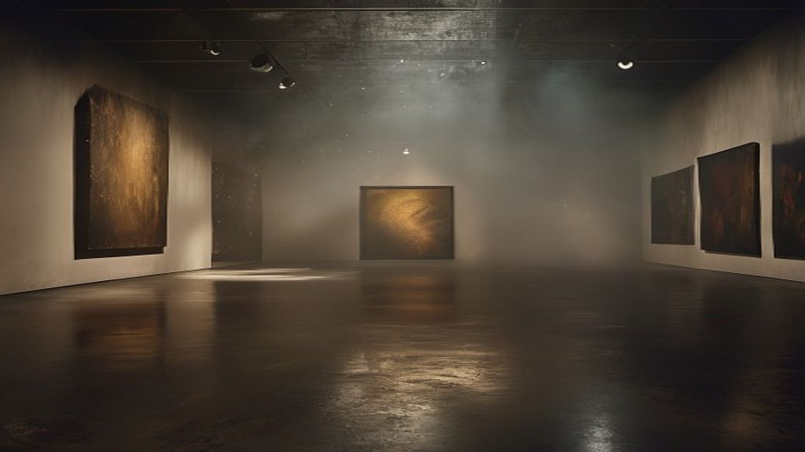
AI placeholder · v5 mockup
AI proxy — moody sanctum with light beams
Generated stand-in. Brass spotlights cutting visible beams through atmospheric haze — the smoke-pen technique pre-built. The big The Artologist. title lands on this frame.
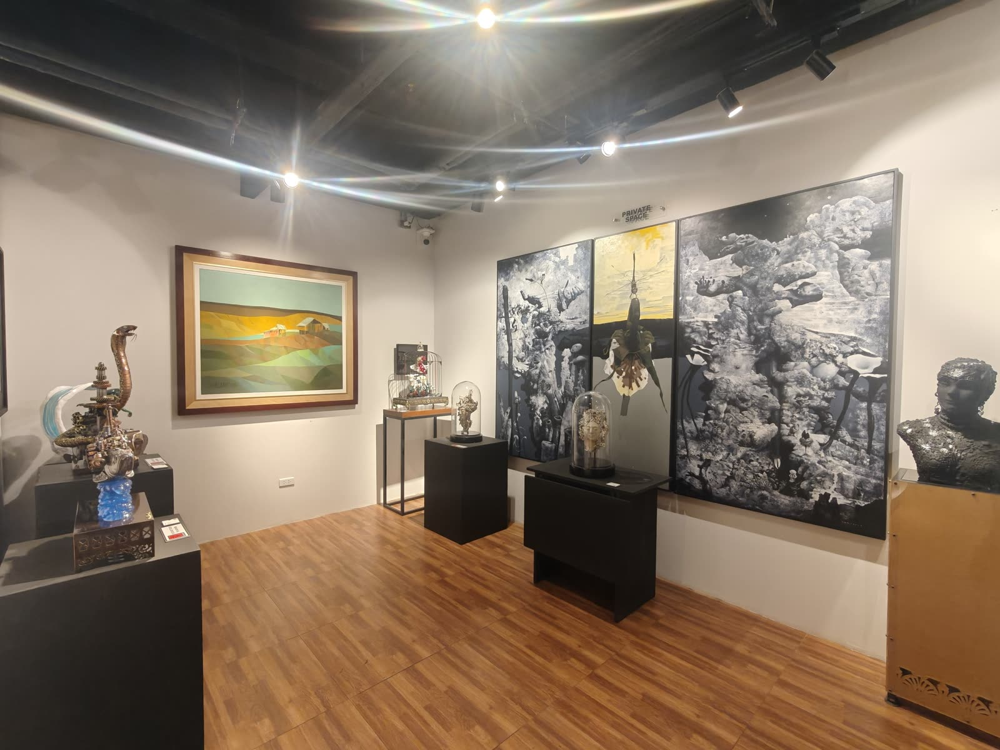
Real photo · current mockup
Real interior
Current v4 mockup uses this. Real, but flatter — no atmospheric beams, no depth-of-field, no story.
Shoot upgrade — Shot D
Mid-room. Wide. Show depth — paintings extending into the back of the gallery, brass spotlights catching dust in their beams (if you can fog the air slightly with a smoke pen, the light beams become visible — extremely cinematic).
05
Choose your way in.
Floating cards offer paths into the site.
Scroll 0.85 → 1.00
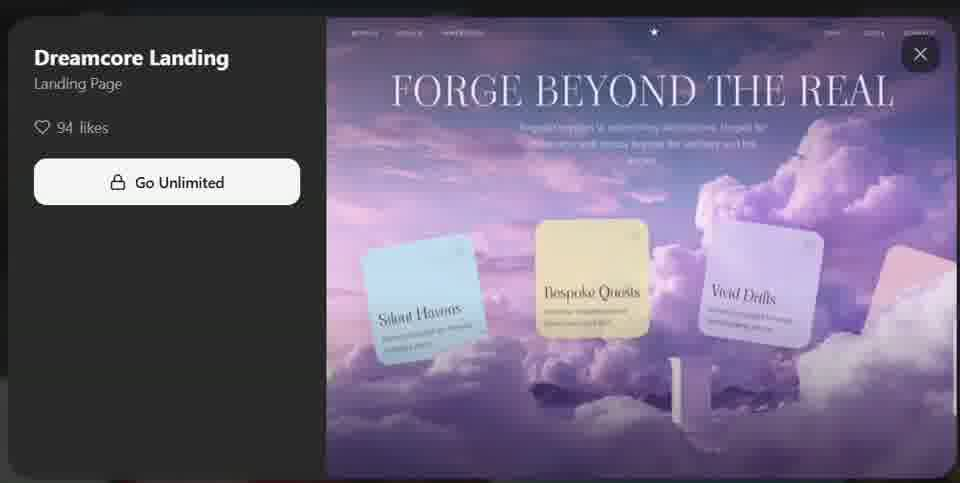
Reference · Dream Land
Three pastel cards on a sky backdrop
"Silent Havens · Bespoke Quests · Vivid Deity" with the headline "FORGE BEYOND THE REAL." Three doors into the rest of the experience.
Material · existing photo
Real artwork cards
Pandy Aviado · Bronze Garden · Floral Reverie. Three cards = three doors into the site (artists, commissions, exhibitions). Currently five — recommend trimming to three for impact, like the reference.
Build note
The current Scene 3 already implements floating cards, but with five of them. Dream Land uses three. The eye can hold three options. Drop two cards, scale the remaining three larger, give each a heavier shadow and a clearer "click here" affordance.
06
The recurring floating pillar.
Dream Land has one object that moves with the camera through the whole arc.
Persistent · phases 1 → 4
Reference · Dream Land
Floating Roman column
The same small white pillar appears in nearly every phase — bottom-right at phase 1, distant at phase 4. It's the visual through-line.
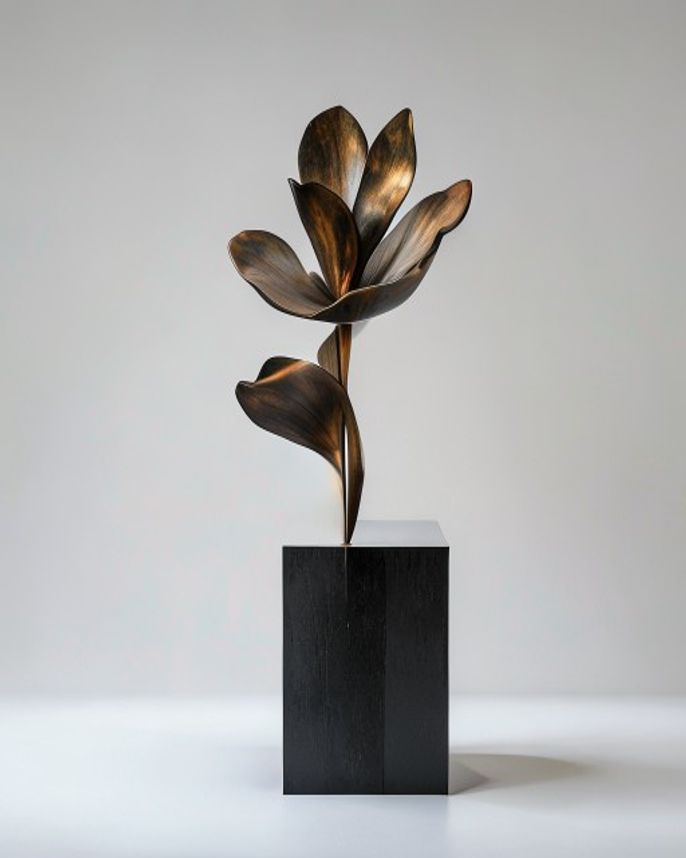
AI placeholder · v5 mockup
AI proxy — bronze flower sculpture
Generated on pure white for clean cutout. Becomes a transparent PNG, layered above all five scenes. Small in phase 1, growing as you scroll, the centrepiece in phase 4.
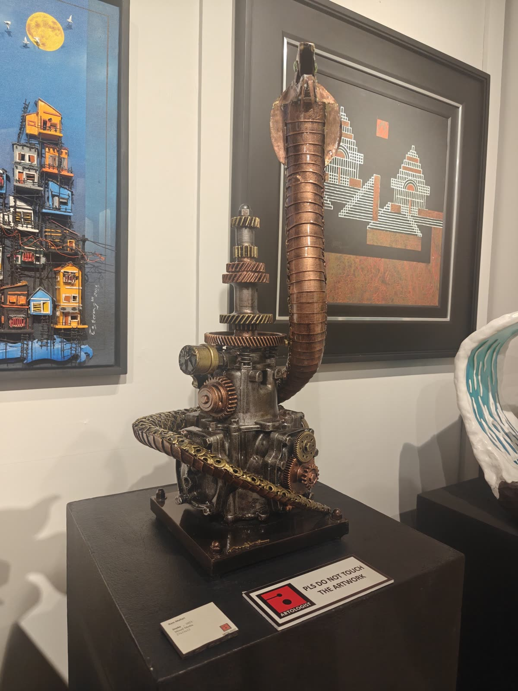
Real photo · existing
Pandy Aviado's actual sculpture
Photographed in situ at the gallery. Once cut from its background (week 1 shoot or post-production), this replaces the AI proxy and becomes the recurring object.
Shoot upgrade — Shot E
One sculpture, three angles, isolated on a neutral background that can be cut cleanly in post (white seamless or plain dark grey). Lit from above and one side. The chosen angle becomes the persistent "follow object" through the whole hero — the equivalent of Dream Land's floating pillar.
The shot list for kickoff week 1.
One 4-hour shoot at Shangri-La + one studio visit with Pandy Aviado covers everything. Bring a wide-angle lens, a tripod, and a fog/smoke pen for the atmosphere shots.
A
Twilight corridor establish
Wide cinematic shot of the Shangri-La mall corridor looking toward the gallery. The blue neon sign as a tiny focal point. Long lens for compression. Shoot at golden hour or after mall lights dim.
Mandatory · phase 1
B
Doorway threshold from outside
Camera 4–6m back in the corridor. Wide-angle. Glass doors fill 60–70% of frame. Dark mall vignettes the rest. The single most important new shot.
Mandatory · phase 2
C
Interior from doorway POV
Standing just inside the threshold, wide-angle. Paintings on both walls, sculpture in middle distance, floor extending back. The threshold should still be visible at the left edge.
Mandatory · phase 3
D
Moody interior establish
Mid-room. Depth. Brass spotlights catching dust beams (use a smoke pen to make beams visible). This is the "you've arrived" frame where the big title lands.
Mandatory · phase 4
E
Signature sculpture, isolated
One piece, three angles, clean neutral background (white seamless or plain dark grey), lit from above and one side. Cuts out cleanly to transparent PNG — the persistent floating element.
Mandatory · floating pillar
F
Spotlit painting from above
Detail of a painting with the light pool visible, dust caught in the beam. Atmospheric overlay element.
Recommended
G
Artist at work — Pandy Aviado
Hands working on a piece in the studio. Sells the "studio visit / artist interview" deliverable across the site.
Recommended · sells the deliverable
H
Exterior wide with mall signage
Backup for phase 1 if the corridor doesn't work — show the gallery in its mall context.
Recommended · alternative
I
Neon sign tight crop, twilight
The blue "THE ARTOLOGIST" neon at close range. Looped texture. Favicon. Identity element.
Recommended · identity asset
J
Brass spotlight close-up
Texture element for atmospheric overlays. Captures the gallery's actual ornament.
 Material · existing photo
Material · existing photo